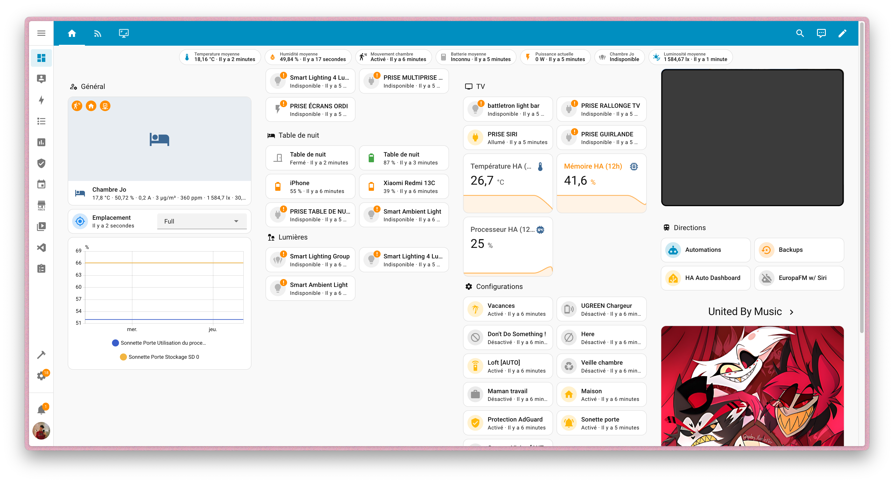

Personal Lab
My personal projects
IAM & SSO Integration: Auth0 / Infomaniak
This technical project, carried out within my personal infrastructure, aimed to solve a complex interoperability issue between two major ecosystems: Auth0 (identity manager) and the Infomaniak kSuite collaborative suite. The objective was to implement a seamless and secure Single Sign-On (SSO) for the Skynium environment.
Faced with the limitations of the SAML protocol in this specific context, I pivoted to an architecture based on OAuth2. This challenge led me to manipulate REST APIs, debug authentication flows, and develop custom scripts (in JavaScript) to ensure correct user mapping between the two providers. This project demonstrates my ability to link heterogeneous software components to create a unified user experience.
Disclaimer
Legal Disclaimer: The brands mentioned (such as Infomaniak™, Auth0™, etc.) belong to their respective owners. The use of these names is purely descriptive and educational within the context of a student portfolio (Fair Use), to illustrate the technical skills acquired on these technologies. This site has no commercial affiliation, partnership, or official link with the mentioned companies.
Home Automation: Automating my room
Beyond a simple gadget, I transformed my personal space into a truly reactive environment thanks to HomeAssistant. This perpetual project is my playground for experimenting with the Internet of Things (IoT). I integrate various protocols to centralize the control of lighting, doorbell, and multimedia, all without relying on the cloud.
The Schedule: SSH (Skynium Student Hub)
Faced with the slowness of the official platform (ADE), I cooked up my own solution: the SSH (Skynium Student Hub). It is an ultra-fast web interface designed to serve the schedule to IUT R&T Luminy students without indigestible loading times.
The secret recipe? A backend script ("The Mise en Place") runs automatically every night at 04:00 AM to retrieve and cache the data. The system is intelligent: upon logging in, the student only sees the "Menu" that concerns them. The display dynamically filters courses according to their TP (practical work) or TD (tutorial) group, offering a personalized and streamlined experience.
🚀 Performance: 5x faster than the official tool.
Simmering: Cloud Infrastructure & Raspberry Pi
My next hardware experiment ("The Main Course") will consist of deploying an autonomous Linux server on a Raspberry Pi. The goal is to free myself from proprietary solutions to create my own personal cloud.
I will focus on remote access security by adopting a Zero Trust architecture. I plan to compare and implement solutions like Cloudflare Tunnel or Tailscale. This will allow me to access my containers and files from anywhere, without unnecessarily exposing ports on my internet box.
⏲️ Status: Equipment order in progress / Design phase.
R&D: Virtualization & Network Services (R&T Lab)
Inspired by my courses at IUT R&T, I wish to transform my Raspberry Pi into a real pocket hypervisor. The goal is to segment my infrastructure via virtual machines (VM) or containers to recreate a miniature enterprise network.
I plan to deploy and manually configure fundamental Internet services: a DHCP server for address distribution and a local DNS server (perhaps coupled with a Pi-hole) for name resolution. For me, this is the best way to "get my hands dirty" and master the protocols that govern our digital exchanges, while having fun building a resilient architecture.